Dividers and Couplers
Built-in dividers, hybrids, couplers, a balun, a phase shifter, a delay line and a resistive pad on 20 mil RO4350B at 2.4 GHz, each placed as one part from its specs and laid out by Update Layout, the lumped ones with their parts placed by Place Site Parts. Run a cell's EM setups, simulate its bench, and open its data display to see the circuit model against each solver and an equations model of ideal lines.
File ▸ New ▸ Examples ▸ Dividers and Couplers copies this workspace to a folder you choose and opens it on this README. Every example is listed in Example Workspaces.
RF dividers and couplers placed as single parts, each stated by its specifications and drawn from the same plan its circuit model simulates. One cell per component, each at 2.4 GHz on a 20 mil RO4350B board, laid out by Update Layout from Schematic and solved on the Planar MoM solver, EMerge and Palace. The workspace holds the Wilkinson divider (an MWPD) with an unequal split, a two-section broadband divider, a four-way tree and mitred and square corners; the branch-line hybrid (an MBLC); the rat-race hybrid (an MRRC); the coupled-line coupler (an MCLC); and the coupled-line balun (an MCBL). The Gysel, Bagley and tee dividers (MGPD, MBPD, MTPD), the Schiffman phase shifter (MSPS), a meandered delay line (MDLY), the compact rat-race, the three-section and tandem couplers, the lumped Wilkinson and a resistive pad (MRPAD) are solved on Planar MoM, on a coarse mesh, where it was run. Every cell is also compared with an equations model, the same topology on ideal lines or parts.
Every cell has a test bench beside it, holding the cell's circuit, its equations model and one SnP block per EM setup,
which reads the Touchstone file that setup writes into results/. Simulate the bench and open the cell's .cdd: the
circuit model is a line, the equations model a dashed line and each solver a set of markers. No results ship; the
benches read what your own runs write.
The cells
| Cell | Views | What it is |
|---|---|---|
| Wilkinson | schematic, layout, EM setup, 3D view | A 5 mm input line, the MWPD, a 100 Ω resistor with an 0402 land pattern on R2-R3, and each output bending away through a 90° MCURVE and a 5 mm line to its port |
| Unequal | schematic, layout, EM setup, 3D view | The same board with K = 1.4142, so port 3 takes twice port 2's power, and a 106.07 Ω resistor |
| Broadband | schematic, layout, EM setup, 3D view | The same board with N = 2 over an octave: two sections and two resistors, 242.14 Ω and 97.69 Ω |
| FourWay | schematic, layout | Three equal-split MWPDs in a tree, ports 2 to 5 on the second stage's outputs |
| Mitred | schematic, layout | The Wilkinson cell's circuit three times, its MWPD with Corner = Curve, Miter and Square |
| Branch-Line | schematic, layout, EM setup, 3D view | A one-section MBLC with a 5 mm line from each of its four pins to a port |
| Rat-Race | schematic, layout, EM setup, 3D view | An MRRC with a 5 mm line from each of its four pins to a port |
| Coupler | schematic, layout, EM setup, 3D view | A 10 dB MCLC, each of its four ports reached through a 90° MCURVE and a 5 mm line that bend away from the other strip |
| Balun | schematic, layout, EM setup, 3D view | An MCBL from 50 Ω to 200 Ω on each output, a via to ground on each coupled strip |
| Gysel | schematic, layout, EM setup | An MGPD, a 50 Ω 0402 from each isolation node to a ground via, and a 5 mm line from each port pin to its port |
| Bagley | schematic, layout, EM setup | A three-way MBPD with a 5 mm line from each of its four pins to a port |
| Tee | schematic, layout, EM setup | An MTPD with K = 1.4142, so port 3 takes twice port 2's power, through no resistor |
| Schiffman | schematic, layout, EM setup | A 90° MSPS, port 1 turning away from port 2 and the reference's feeds as long at F as the C-section's |
| Delay | schematic, layout, EM setup | A 360° MDLY meandered in two half-turns |
| Compact Rat-Race | schematic, layout, EM setup | The Rat-Race cell with Meander = 1, its 3λ/4 arm folded inside the ring |
| Sections | schematic, layout, EM setup | The Coupler cell's board with Sections = 3: a 15 dB coupler over 2:1 |
| Tandem | schematic, layout | A 3 dB MCLC with Tandem = 1, a 0 Ω 1206 jumper across each crossover |
| Lumped Wilkinson | schematic, layout | An MWPD with Realization = Lumped, its six 0402s placed by Place Site Parts, each capacitor to a via |
| Pad | schematic, layout, EM setup | A 6 dB π MRPAD, its three 0402s placed by Place Site Parts, each shunt one to a via |
| Wilkinson Bench … Pad Bench | schematic | One per cell: the cell's circuit, its equations model, and one SnP block per EM result with its ports closed |
Wilkinson.cdd … Pad.cdd |
data display | One per cell, at the top of the workspace |
Run it
Run a cell's EM setups, then simulate its bench and open its .cdd. Planar is the setup in the cell's em/ folder;
EMerge and Palace are the two setups in its 3D view.
| Cell | Planar MoM | EMerge | Palace | Then |
|---|---|---|---|---|
| Wilkinson | 4½ min | 1 min | 1½ min | Simulate Wilkinson Bench, open Wilkinson.cdd |
| Unequal | 34½ min | 1 min | 3 min | Simulate Unequal Bench, open Unequal.cdd |
| Broadband | 49 min | 1 min | 3 min | Simulate Broadband Bench, open Broadband.cdd |
| Branch-Line | 1½ min | 1½ min | 7 min | Simulate Branch-Line Bench, open Branch-Line.cdd |
| Rat-Race | 24½ min | 1½ min | 12½ min | Simulate Rat-Race Bench, open Rat-Race.cdd |
| Coupler | 9½ min | 3 min | 12 min | Simulate Coupler Bench, open Coupler.cdd |
| Balun | refused | 2 min | 6½ min | Simulate Balun Bench, open Balun.cdd |
| FourWay | — | — | — | Simulate FourWay Bench, open FourWay.cdd |
| Mitred | — | — | — | Simulate Mitred Bench, open Mitred.cdd |
| Gysel | 2½ min | — | — | Simulate Gysel Bench, open Gysel.cdd |
| Bagley | 17 s | — | — | Simulate Bagley Bench, open Bagley.cdd |
| Tee | 16 s | — | — | Simulate Tee Bench, open Tee.cdd |
| Schiffman | 3 min | — | — | Simulate Schiffman Bench, open Schiffman.cdd |
| Delay | 9 s | — | — | Simulate Delay Bench, open Delay.cdd |
| Compact Rat-Race | 3 min | — | — | Simulate Compact Rat-Race Bench, open Compact Rat-Race.cdd |
| Sections | 1 min | — | — | Simulate Sections Bench, open Sections.cdd |
| Tandem | — | — | — | Simulate Tandem Bench, open Tandem.cdd |
| Lumped Wilkinson | — | — | — | Simulate Lumped Wilkinson Bench, open Lumped Wilkinson.cdd |
| Pad | 4½ min | — | — | Simulate Pad Bench, open Pad.cdd |
Times are from Linux machines, 8 threads for Planar and EMerge and 8 Palace processes; the first 3D run offers to install its solver. A bench simulates in under a second and reads every result its cell has, so run them all first.
A resistor on the board is a component port. The Wilkinson's ring joins the 0402's two pads the long way round, so the port across them closes a loop; at RF it is an ordinary port. The bench closes it with the cell's own resistor, as the co-simulation netlist each run writes does, and the tables below are those closed results.
A bench sweeps the eleven frequencies the EM setups solve, F·2^(k/5) from F/2 to 2F, so every marker is a solved point and the circuit line joins the model's values at the same eleven. Each cell's own schematic is a test bench too, swept finely: simulate it for a smooth circuit curve. A bench with no EM result keeps its cell's fine sweep.
Every bench holds an equations model: the same topology on ideal TLIN and CLIN lines of the closed-form
impedances and lengths, or ideal R, L and C, with each port's feed an ideal line of that feed's own impedance and length
at F. Its ports follow the cell's, and each .cdd draws it dashed, so the table under each cell gives what the
microstrip models and the board add.
Wilkinson
An MWPD with Z0 50 Ω, F 2.4 GHz and Gap 1.35 mm, the 0402's pin span. Its outputs bend away from each other
because a calibrated Planar port needs five substrate heights clear of other metal.


| At 2.4 GHz | Circuit | Planar MoM | EMerge | Palace |
|---|---|---|---|---|
| |S11| | −47.5 dB | −28.2 dB | −24.6 dB | −23.5 dB |
| |S21| | −3.149 dB | −3.113 dB | −3.130 dB | −3.163 dB |
| |S23| | −36.4 dB | −29.2 dB | −25.1 dB | −18.6 dB |
All three put |S21| within 0.04 dB of the model. The equations model, ideal lines, splits −3.01 dB: the model's lines lose 0.14 dB. The nulls are shallower on every solver, and in 3D the isolation null sits at 2.09 GHz, mostly because of the Draft mesh.
Unequal split
The Wilkinson with K = 1.4142: 3.01 dB more into port 3, through a 103 Ω arm to port 2 and a 51.5 Ω arm to port 3,
and R1 = Z0·(K + 1/K) = 106.07 Ω.
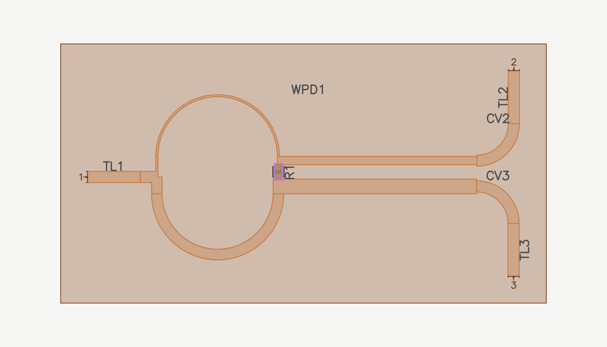

| At 2.4 GHz | Circuit | Planar MoM | EMerge | Palace |
|---|---|---|---|---|
| |S21| | −4.993 dB | −5.000 dB | −4.666 dB | −4.683 dB |
| |S31| | −1.958 dB | −1.853 dB | −2.084 dB | −2.587 dB |
| P3/P2, 3.01 dB asked for | 3.04 dB | 3.15 dB | 2.58 dB | 2.10 dB |
| |S23| | −37.2 dB | −32.0 dB | −21.7 dB | −16.3 dB |
Planar divides as the model does, with its nulls at 2.4 GHz. On ideal lines |S21| is −4.77 dB, 0.22 dB above the model. Its setup meshes 2 cells across a conductor: at the default 4, the 0.2 mm arm would set a cell size that needs about 100 GB per frequency.
Broadband divider
The Wilkinson with N = 2 and Band = 2: two sections over 1.6 to 3.2 GHz, R1 (242.14 Ω) at the outputs and R2
(97.69 Ω) where the ring meets section 1.
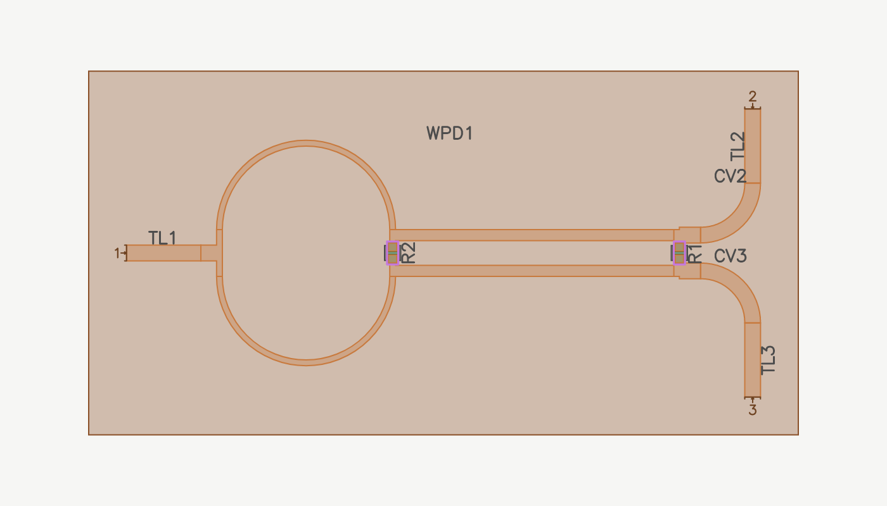
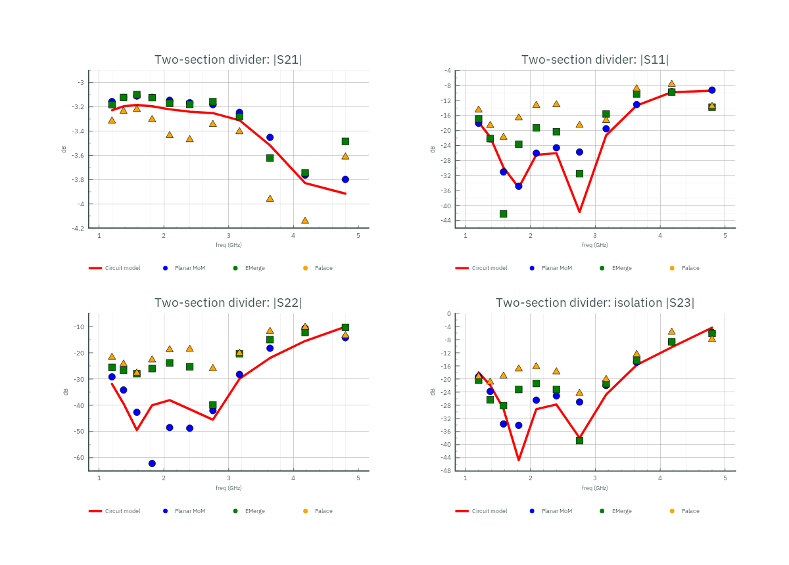
| At 2.4 GHz | Circuit | Planar MoM | EMerge | Palace |
|---|---|---|---|---|
| |S11| | −26.0 dB | −24.6 dB | −20.3 dB | −13.1 dB |
| |S21| | −3.240 dB | −3.166 dB | −3.179 dB | −3.470 dB |
| |S23| | −27.8 dB | −25.1 dB | −23.2 dB | −17.8 dB |
The model keeps |S11| below −20 dB from 1.31 to 3.22 GHz, 2.5:1, against one section's 1.98 to 2.85 GHz. Ideal lines read −25.9 dB at F as well: that is the two sections' own equal ripple. Planar and EMerge follow it across the band; Palace's Draft mesh reads the match 7 to 13 dB shallower below 2.8 GHz.
Four-way tree
Three MWPDs, each with its own 100 Ω 0402: the planar way to four outputs, since a single N-way divider's resistors meet at one point that no one-layer drawing reaches. Circuit only: each divider is the Wilkinson cell's.
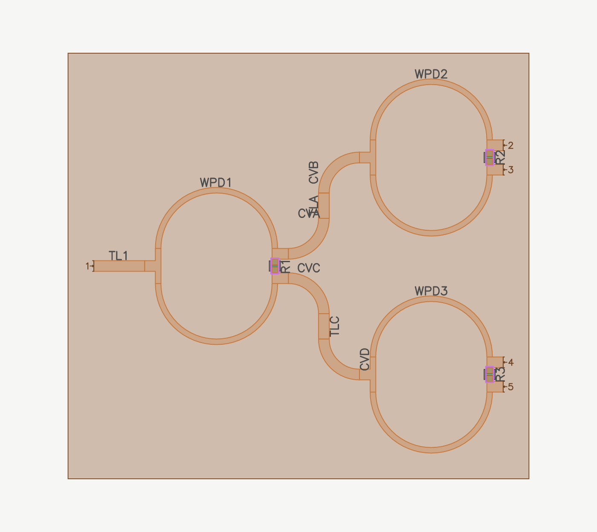
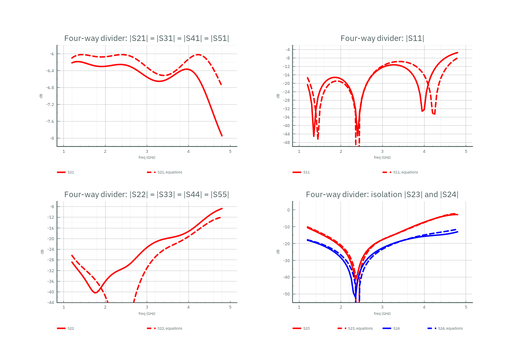
| At 2.4 GHz | Circuit |
|---|---|
| |S21| = |S31| = |S41| = |S51| | −6.256 dB, all four in phase |
| |S11| | −42.0 dB |
| |S23|, one divider's outputs | −38.9 dB |
| |S24|, two dividers' outputs | −42.7 dB |
|S11| stays below −20 dB from 2.15 to 2.63 GHz, narrower than one divider's band: each stage sees the next one's mismatch through the line between them. Ideal lines give −6.02 dB to each output: the model's lines lose 0.24 dB.
Mitred and square corners
The Wilkinson's circuit three times on one bench, its MWPD drawn with curved arms (Corner = Curve, ports 1-3), mitred
corners (Miter, ports 4-6) and square corners (Square, ports 7-9). With corners the ring is a rectangle as tall as
the curved ring, so its arms stay as far apart, and each straight run is shortened by its corners' own electrical
length at F, so every arm is still a quarter wave there.
Circuit only, swept every 10 MHz.
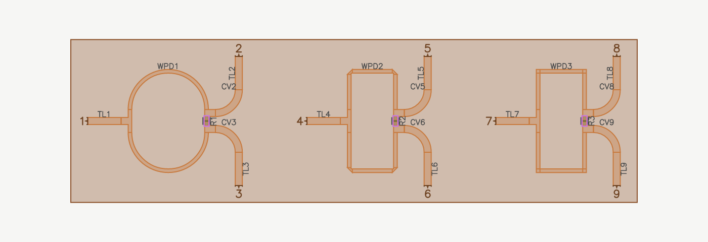
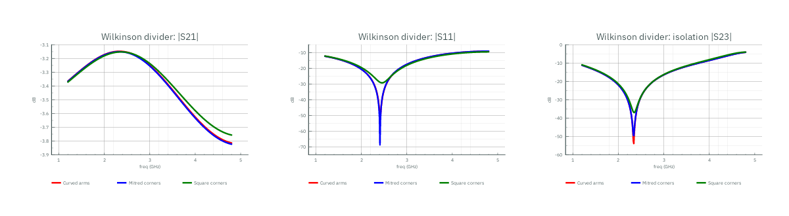
| At 2.4 GHz | Curve | Miter | Square |
|---|---|---|---|
| |S11| | −47.5 dB | −51.7 dB | −28.7 dB |
| |S21| | −3.149 dB | −3.152 dB | −3.152 dB |
| |S23| | −36.4 dB | −36.2 dB | −34.5 dB |
| ∠S21 | −173.0° | −173.0° | −172.8° |
The mitred divider's |S21| is the curved one's to 0.01 dB across the band, and all three keep |S11| below −20 dB from about 2.0 to 2.8 GHz. Square corners reflect, from the excess capacitance an unchamfered corner carries: their match bottoms out at −29 dB, and their |S21| strays from the curved one's by up to 0.06 dB. The equations model, one ideal divider, gives −3.01 dB, 0.14 dB above all three.
Branch-line hybrid
A one-section MBLC with Z0 50 Ω and F 2.4 GHz: 35.4 Ω series arms and 50 Ω shunt arms, each a quarter wave between
the reference planes of its junctions.
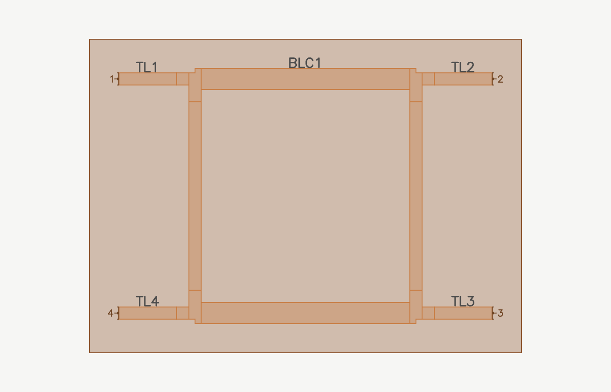
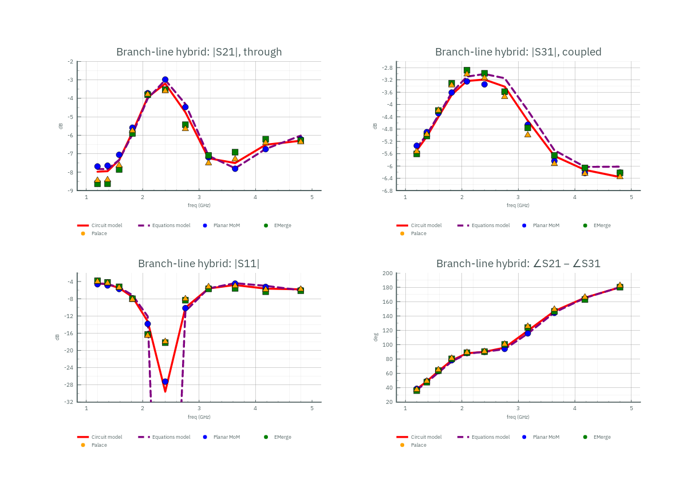
| At 2.4 GHz | Circuit | Planar MoM | EMerge | Palace |
|---|---|---|---|---|
| |S11| | −30.4 dB | −27.2 dB | −18.2 dB | −18.0 dB |
| |S21|, through | −3.20 dB | −2.98 dB | −3.53 dB | −3.60 dB |
| |S31|, coupled | −3.19 dB | −3.35 dB | −2.99 dB | −3.14 dB |
| ∠S21 − ∠S31 | 90.1° | 90.0° | 90.2° | 90.4° |
Planar is within 0.22 dB of the model, and every solver holds the 90° within 0.5°. Ideal lines split −3.01 dB at 90.0°, about 0.2 dB above the model. The two 3D solvers agree with each other within 0.15 dB, and both read the through port low.
Rat-race hybrid
An MRRC with Z0 50 Ω and F 2.4 GHz, its 70.7 Ω ring drawn as two straight runs and two half-turns: ports 2, 1 and 3
a quarter wave apart on the upper run, and port 4 on the lower.

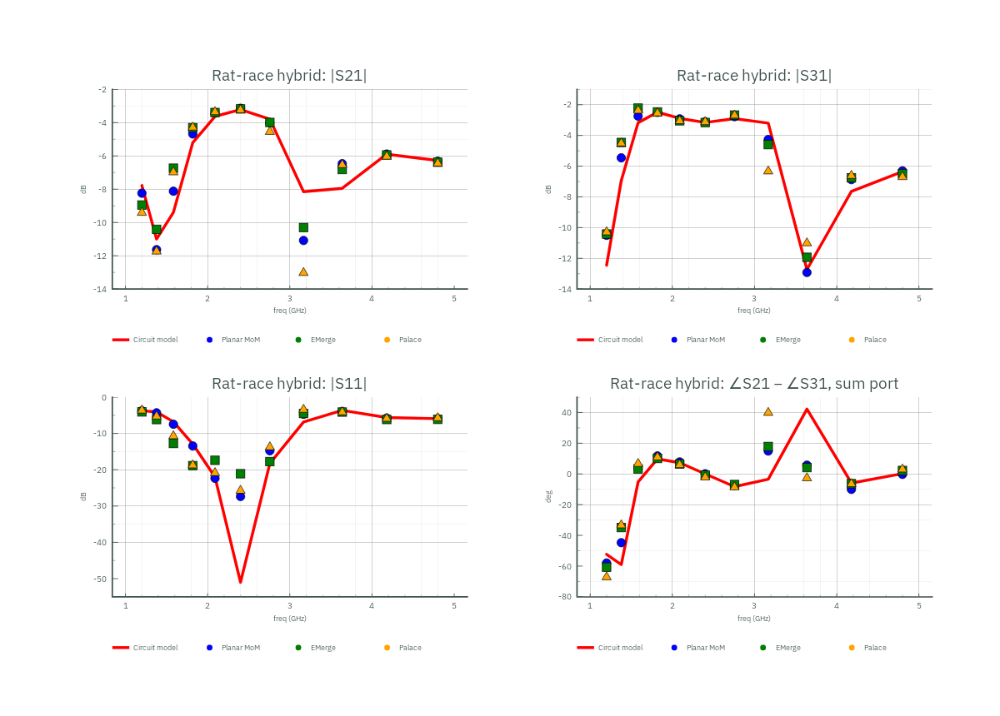
| At 2.4 GHz | Circuit | Planar MoM | EMerge | Palace |
|---|---|---|---|---|
| |S11|, Σ | −51.0 dB | −27.4 dB | −21.1 dB | −25.7 dB |
| |S21| | −3.21 dB | −3.14 dB | −3.18 dB | −3.24 dB |
| |S31| | −3.16 dB | −3.11 dB | −3.16 dB | −3.12 dB |
| |S41|, Σ to Δ | −50.3 dB | −53.3 dB | −41.8 dB | −33.6 dB |
| ∠S21 − ∠S31 | 0.0° | 0.1° | −0.7° | −2.2° |
Every split is within 0.1 dB of the model and the sum within 2.2° of in phase. Ideal lines split −3.01 dB in phase, 0.15 to 0.20 dB above the model. Outside the band the ring's nulls move fast with frequency, so a small shift reads as several dB.
Coupled-line coupler
An MCLC with Coupling 10 dB, Z0 50 Ω and F 2.4 GHz: two 0.888 mm strips 0.115 mm apart and 19.2 mm long. The
feeds are drawn at the strip width, so no step in the copper sits outside the model.
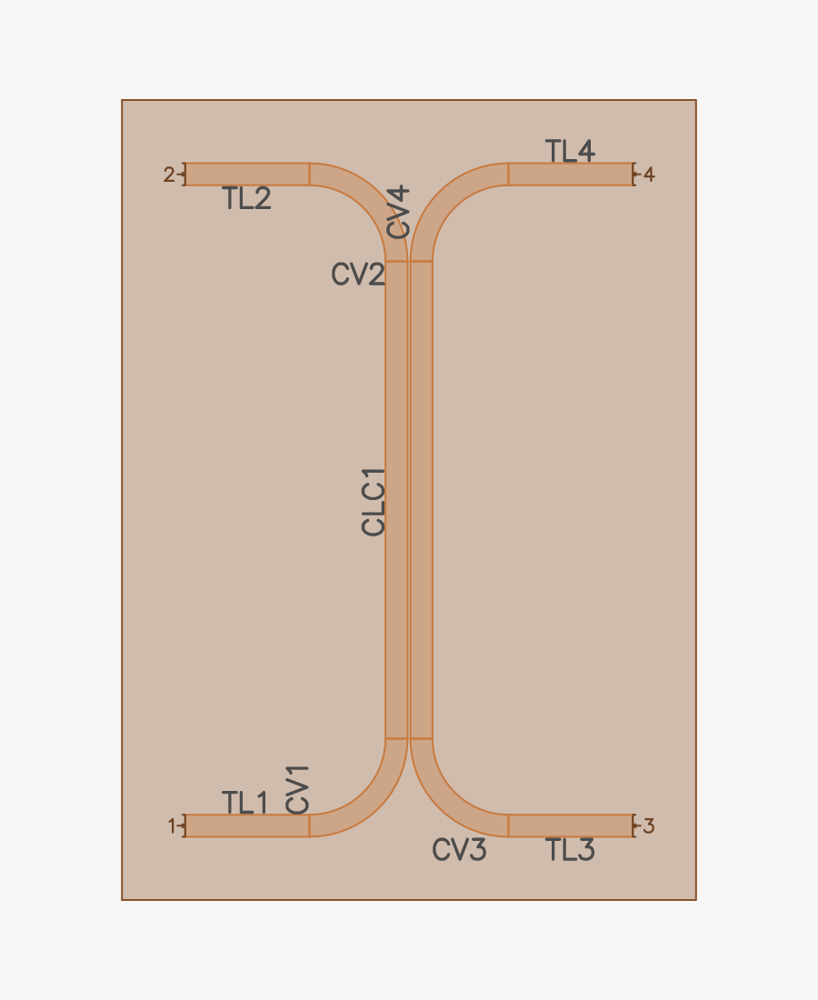
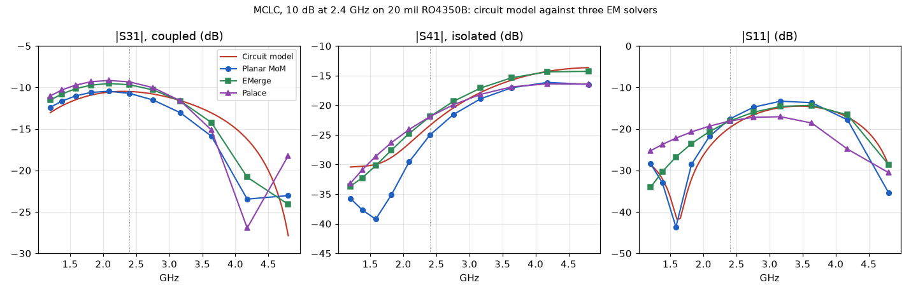
| At 2.4 GHz | Circuit | Planar MoM | EMerge | Palace |
|---|---|---|---|---|
| |S31|, coupled | −10.49 dB | −10.72 dB | −9.67 dB | −9.33 dB |
| |S21|, through | −0.64 dB | −0.60 dB | −0.72 dB | −0.82 dB |
| |S41|, isolated | −23.4 dB | −25.1 dB | −21.9 dB | −21.9 dB |
| |S11| | −19.7 dB | −17.6 dB | −18.1 dB | −18.1 dB |
Planar lands within 0.23 dB of the model's coupling and the 3D solvers read about 1 dB more. TEM lines with the same feeds isolate port 4 to −26.9 dB: microstrip's unequal mode speeds cost 3.4 dB of it. The directivity, 12 to 14 dB, is microstrip's limit: the odd mode outruns the even.
Coupled-line balun
An MCBL from 50 Ω to 200 Ω on each output at 2.4 GHz, with Gap 4 mm between its sections. 50 Ω outputs would need a
gap under a tenth of the substrate height, which the part refuses.
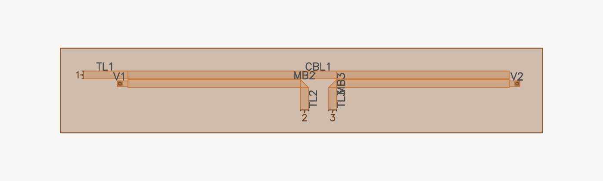
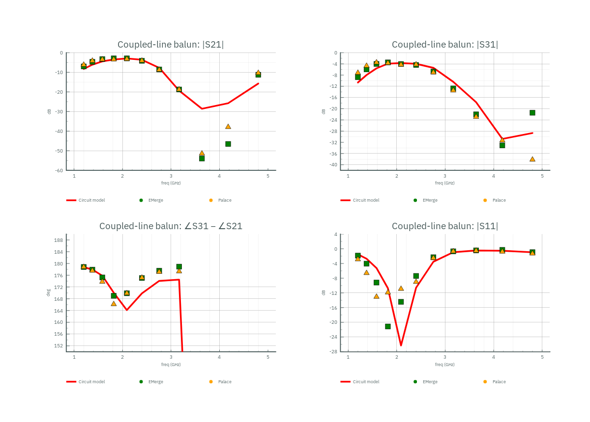
| At 2.4 GHz | Circuit | Planar MoM | EMerge | Palace |
|---|---|---|---|---|
| |S21| | −3.63 dB | refused | −4.15 dB | −4.10 dB |
| |S31| | −3.96 dB | refused | −4.39 dB | −4.24 dB |
| ∠S31 − ∠S21 | 169.8° | refused | 175.1° | 175.1° |
| |S11| | −10.6 dB | refused | −7.4 dB | −9.0 dB |
Planar refuses the layout: its two ground vias are 0.71 λ apart at 4.8 GHz, past its via kernel's tenth of a wavelength. The match is narrow and sits below F, because the joining and output lines the board needs add to the sections' length. On TEM lines with the same 4 mm join the outputs are 175.7° apart: the join takes 4.3° and the mode speeds 5.8°.
Gysel divider
An MGPD with Z0 50 Ω and F 2.4 GHz: the ring's quarter waves of 70.7 Ω to each output and of 50 Ω to each
isolation node, and the half wave between the nodes, each node to a ground via through a 50 Ω 0402.
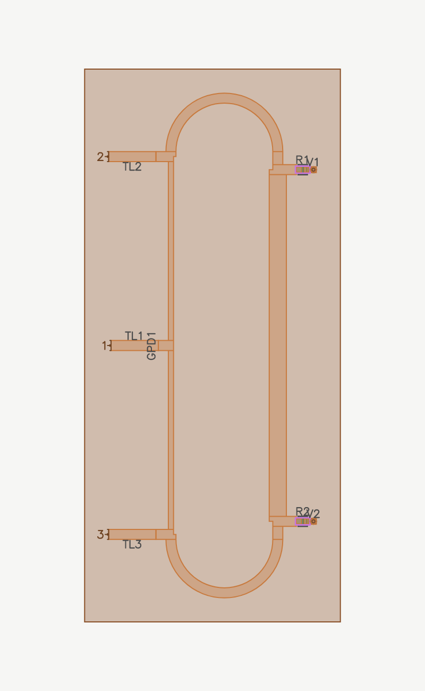
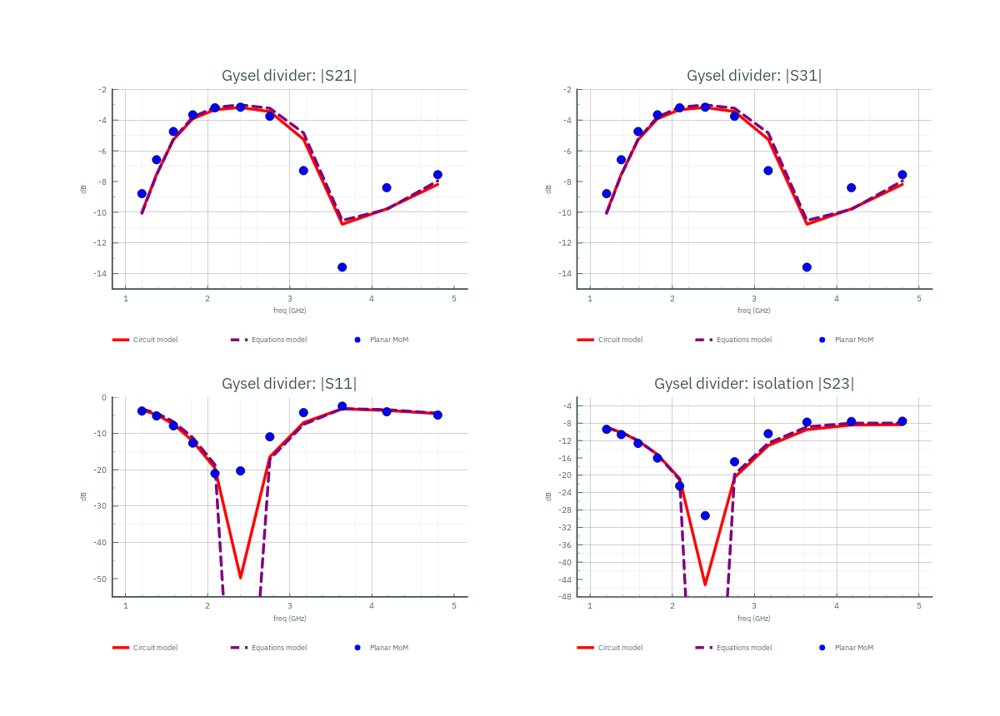
| At 2.4 GHz | Equations | Circuit | Planar MoM |
|---|---|---|---|
| |S11| | below −100 dB | −49.8 dB | −20.3 dB |
| |S21| = |S31| | −3.01 dB | −3.18 dB | −3.16 dB |
| |S23| | below −100 dB | −45.2 dB | −29.3 dB |
The vias are half a wavelength apart, past the reach of Planar's via kernel, so the setup cuts each out with a port of its own and the bench closes it with the via's model, as it closes each resistor.
Bagley divider
A three-way MBPD with Z0 50 Ω and F 2.4 GHz: the outputs on the corners of a polygon of half waves, the input a
quarter wave from the first and last corners. Only the input is matched.
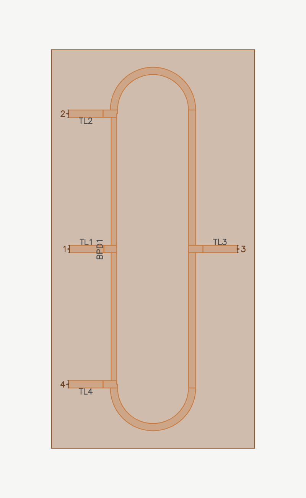
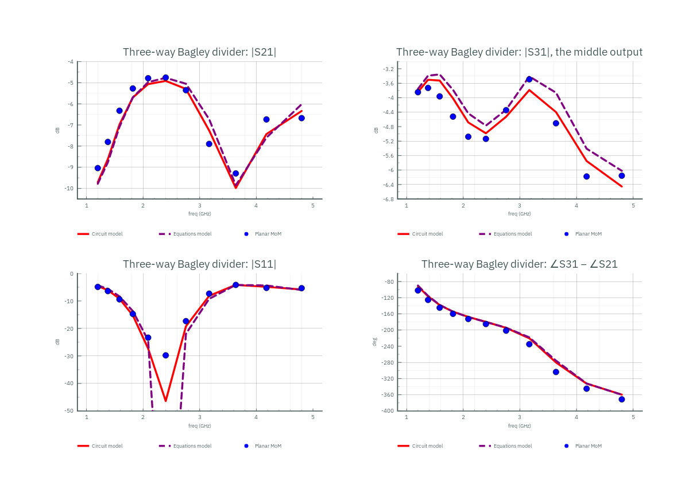
| At 2.4 GHz | Equations | Circuit | Planar MoM |
|---|---|---|---|
| |S11| | below −100 dB | −46.4 dB | −29.8 dB |
| |S21| = |S41| | −4.77 dB | −4.92 dB | −4.76 dB |
| |S31| | −4.77 dB | −4.98 dB | −5.14 dB |
| ∠S31 − ∠S21 | −180.0° | −179.8° | −185.1° |
The model's outputs are within 0.21 dB of a third each, neighbouring corners in opposite phase.
Tee divider
An MTPD with K = 1.4142: one tee whose arms are quarter-wave transformers to 86.6 Ω and 61.2 Ω, so port 3 takes
twice port 2's power. There is no resistor, so the outputs are not isolated.
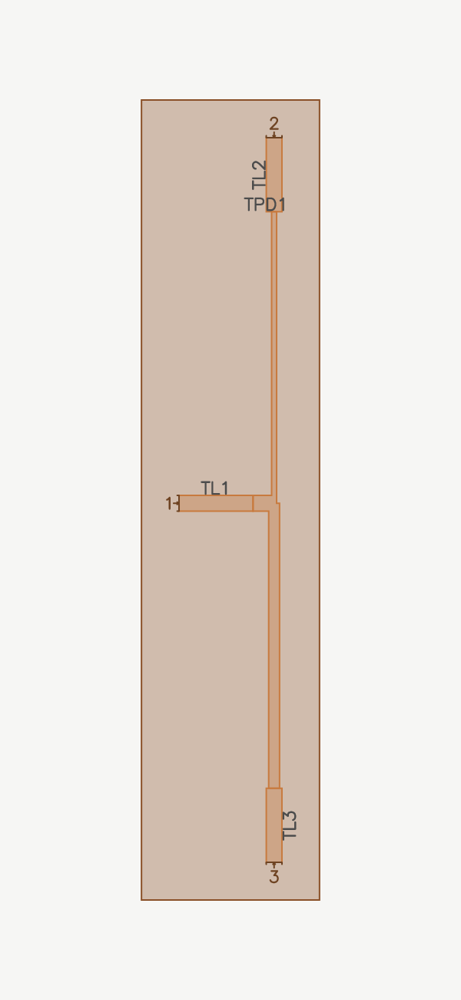
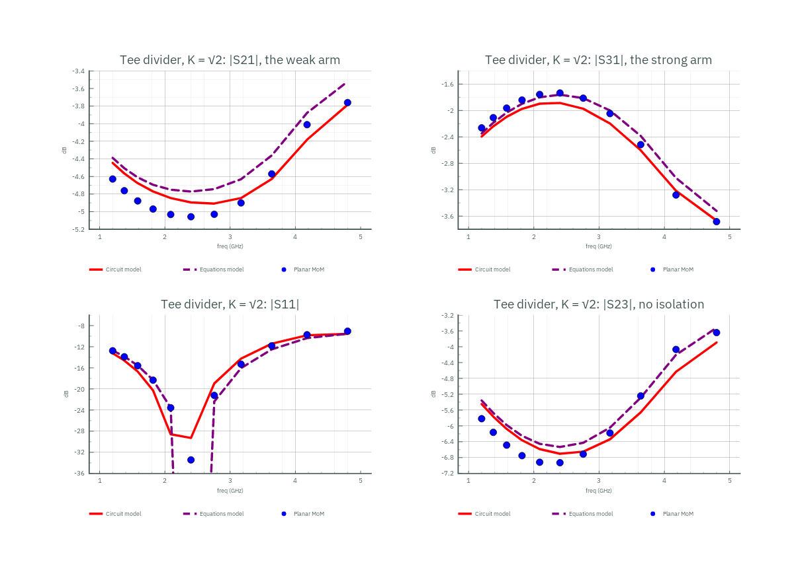
| At 2.4 GHz | Equations | Circuit | Planar MoM |
|---|---|---|---|
| |S11| | below −100 dB | −29.3 dB | −33.4 dB |
| |S21| | −4.77 dB | −4.89 dB | −5.06 dB |
| |S31| | −1.76 dB | −1.89 dB | −1.74 dB |
| |S23| | −6.53 dB | −6.70 dB | −6.93 dB |
The model splits 3.00 dB between the outputs, as the ideal lines do; Planar splits 3.32 dB.
Schiffman phase shifter
An MSPS with Phase 90° and Band 1.4: a C-section on ports 1-2 and a reference line, folded on a half-turn, on
ports 3-4. Ports 1 and 2 leave the C-section's strips at their own width, and the reference's feeds are 8.06 mm, which
brings the bench's difference in phase to the part's 90° at F.
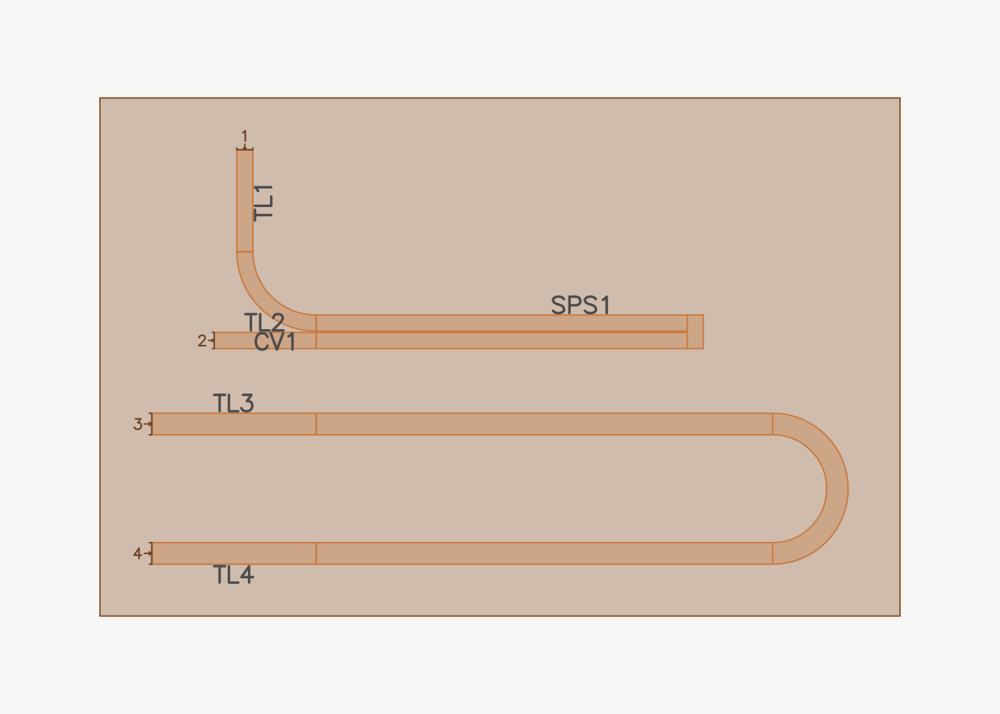
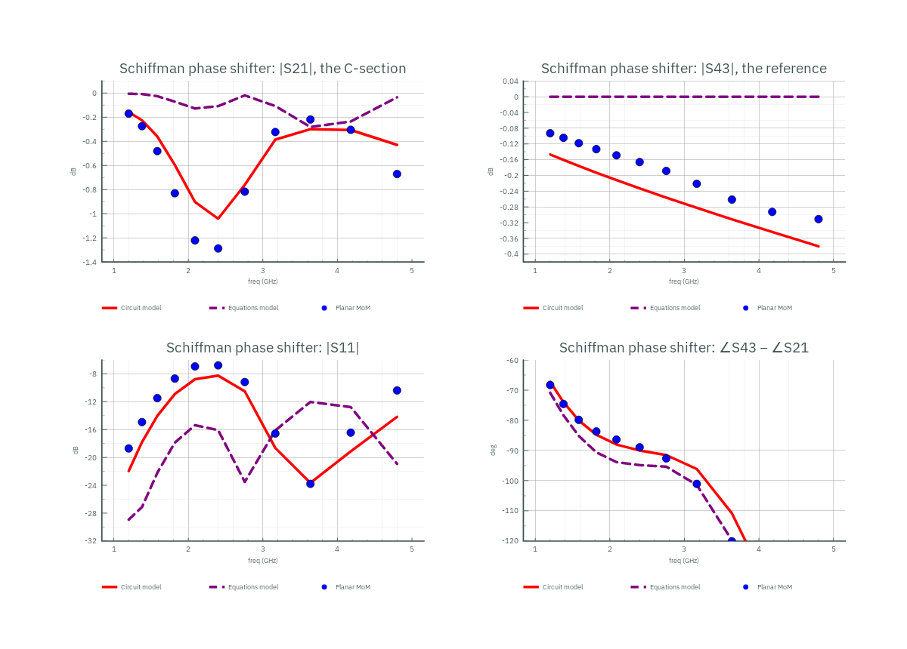
| At 2.4 GHz | Equations | Circuit | Planar MoM |
|---|---|---|---|
| |S21|, C-section | −0.11 dB | −1.04 dB | −1.29 dB |
| |S43|, reference | 0.00 dB | −0.23 dB | −0.17 dB |
| |S11| | −16.1 dB | −8.3 dB | −6.8 dB |
| ∠S43 − ∠S21 | −94.9° | −90.0° | −89.0° |
The ideal pair is matched, and its −16 dB is the feeds' 59 Ω; on microstrip the modes travel at different speeds, which no length fixes, and the model's match is −8 dB.
Delay line
An MDLY of 360° at 2.4 GHz meandered in two half-turns, each pin on a 5 mm line to its port.
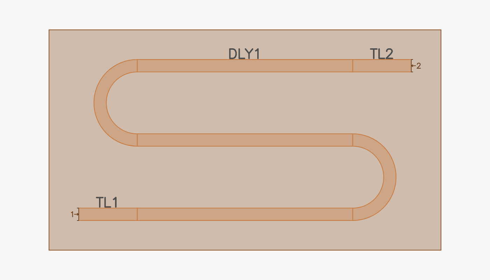
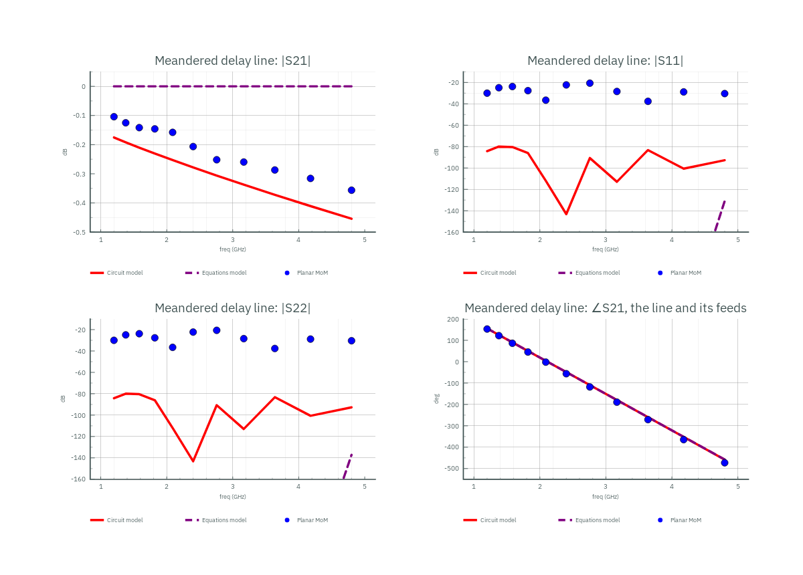
| At 2.4 GHz | Equations | Circuit | Planar MoM |
|---|---|---|---|
| |S11| | below −100 dB | below −80 dB | −22.3 dB |
| |S21| | 0.00 dB | −0.28 dB | −0.21 dB |
| ∠S21, the line and its feeds | −408.8° | −408.8° | −416.3° |
The model holds the 360° through its turns to 0.01°; Planar reads the run 7.5° long, 1.8 %.
Compact rat-race
The Rat-Race cell with Meander = 1: the ring's 3λ/4 arm folded inside it, so the copper takes 54 % of the curved
ring's area.
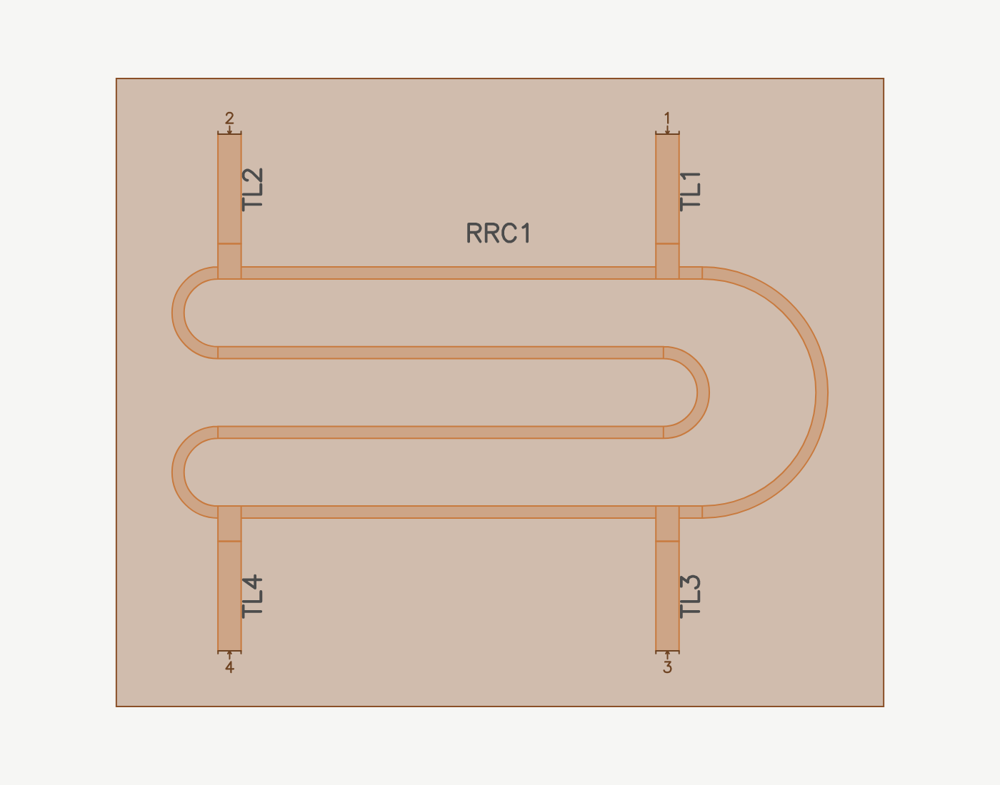
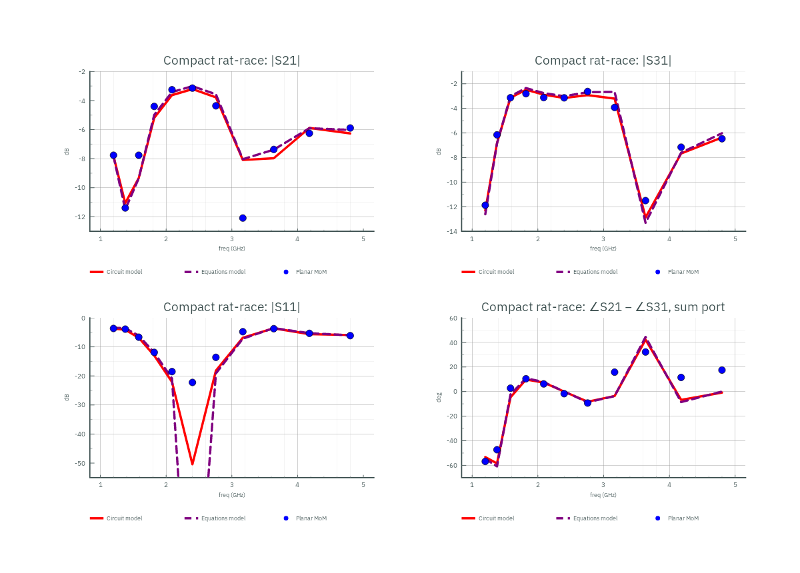
| At 2.4 GHz | Equations | Circuit | Planar MoM |
|---|---|---|---|
| |S11|, Σ | below −100 dB | −51.0 dB | −22.2 dB |
| |S21| | −3.01 dB | −3.21 dB | −3.14 dB |
| |S31| | −3.01 dB | −3.16 dB | −3.14 dB |
| |S41|, Σ to Δ | below −100 dB | −50.3 dB | −47.9 dB |
| ∠S21 − ∠S31 | 0.0° | 0.0° | −1.7° |
The split is the full ring's to 0.1 dB in both the model and Planar; Planar's sum match is 5 dB shallower than on the full ring.
Three-section coupler
The Coupler cell's board with Sections = 3 at 15 dB over 2:1: three quarter-wave pairs in a row, the middle one the
tightest. The feeds are drawn at the end sections' strip width.
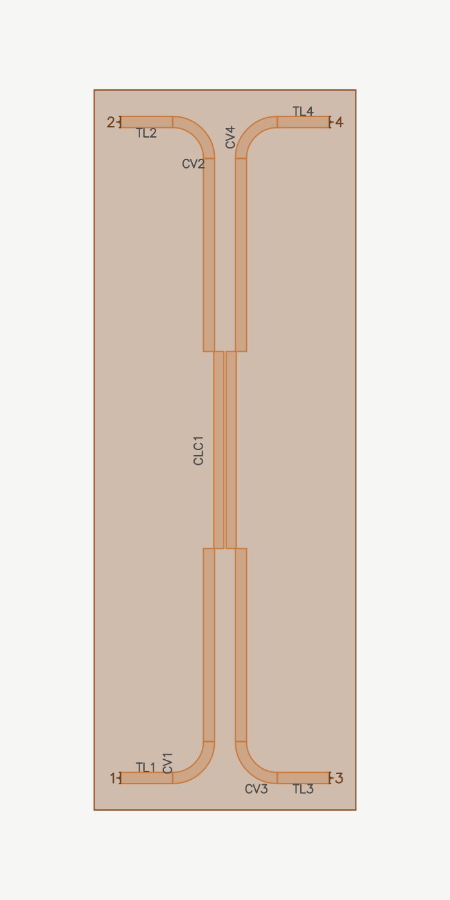
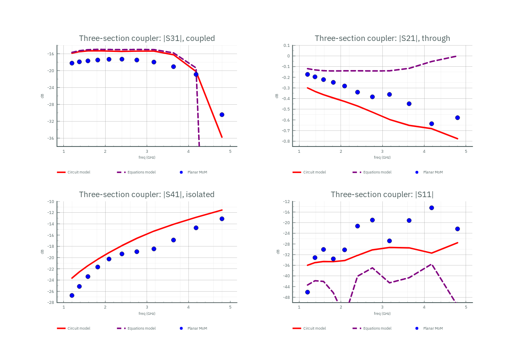
| At 2.4 GHz | Equations | Circuit | Planar MoM |
|---|---|---|---|
| |S31|, coupled | −15.03 dB | −15.44 dB | −17.29 dB |
| |S21|, through | −0.14 dB | −0.47 dB | −0.34 dB |
| |S41|, isolated | −52.6 dB | −17.9 dB | −19.4 dB |
| |S11| | −40.1 dB | −32.3 dB | −21.3 dB |
On ideal lines the isolation is the feeds' alone; on microstrip the odd mode outruns the even over three quarter waves, and the model and Planar both put the isolated port within 2.5 dB of the coupled one.
Tandem coupler
An MCLC with Tandem = 1 and Coupling 3 dB: two 8.33 dB couplers joined around both ends. Each joining line is broken
where a port's lead crosses it, and a 0 Ω 1206 jumper closes each break on J1-J2 and J3-J4, its pads either side of the
lead, as a board does it; each is 1 mΩ in the circuit, since R = 0 leaves the model numerical ripple. The jumper sites
are left by Place Site Parts, so they are placed as plain resistors. LVS is clean. An 0603 or 0805 cannot do it: their
lands are 0.5 and 0.7 mm apart inside, and the 0.81 mm lead between them would short to both pads. Circuit only.
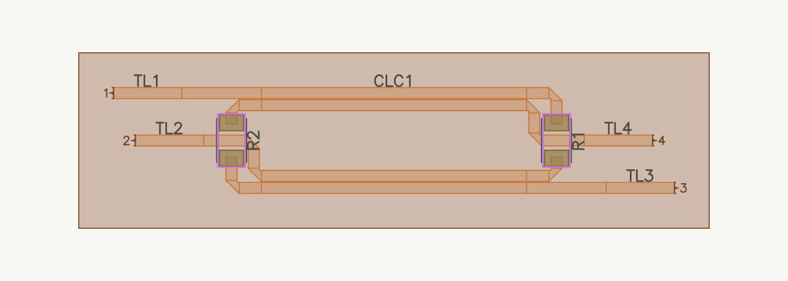
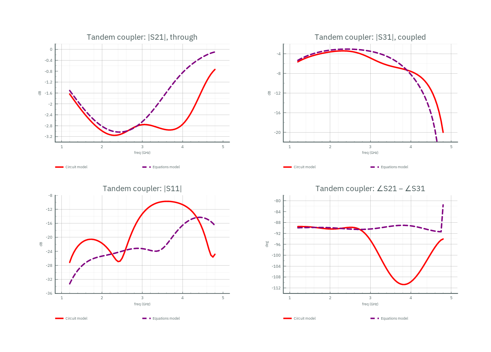
| At 2.4 GHz | Equations | Circuit |
|---|---|---|
| |S21|, through | −3.03 dB | −3.14 dB |
| |S31|, coupled | −3.05 dB | −3.44 dB |
| |S11| | −24.3 dB | −26.9 dB |
| ∠S21 − ∠S31 | −90.3° | −89.9° |
The equations model joins the two couplers directly. The model's outputs are within 1 dB of each other from 1.90 to 2.70 GHz, and in quadrature within 1° from 1.2 to 2.75 GHz.
Lumped Wilkinson
An MWPD with Realization = Lumped, Arm = Pi and Footprint = smt:0402: its interconnect only, and on its
sites the parts Place Site Parts put there, 100 Ω on R2-R3, 4.69 nH on each arm and 1.88, 0.94 and 0.94 pF to ground,
all 0402s. Each capacitor's ground pad goes to a via.
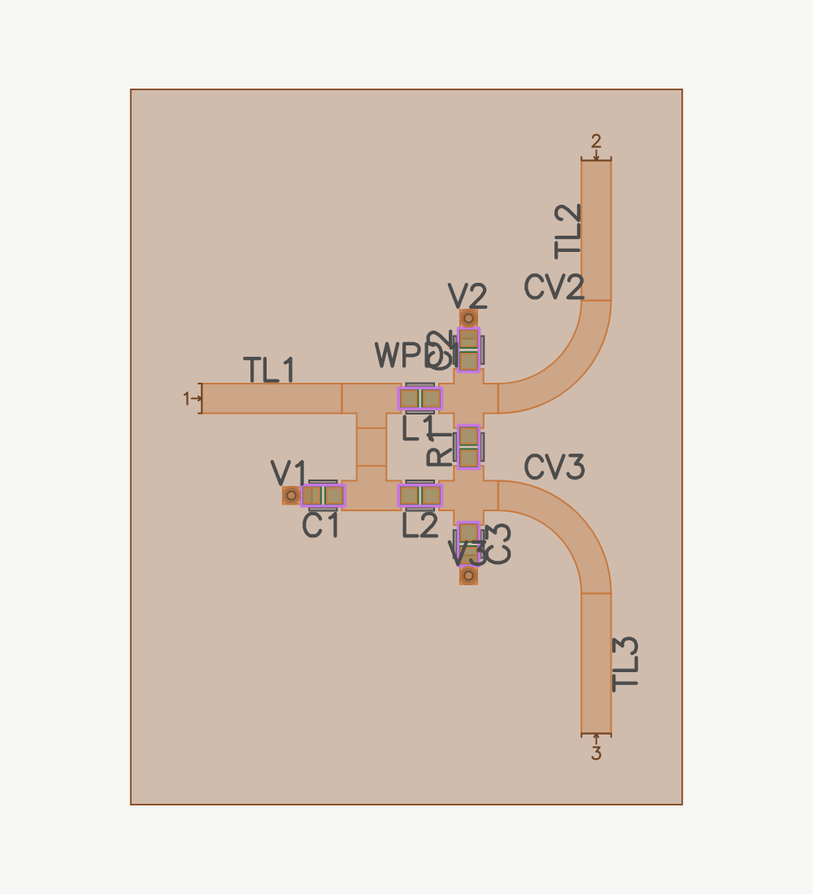
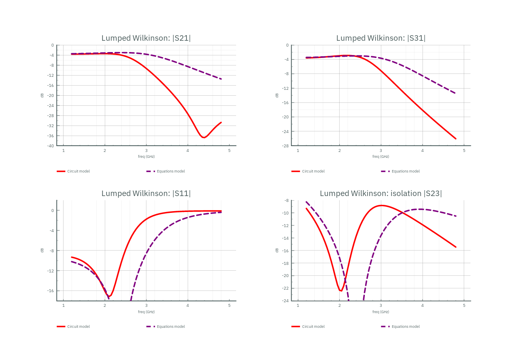
| At 2.4 GHz | Equations | Circuit |
|---|---|---|
| |S11| | below −100 dB | −10.3 dB |
| |S21| | −3.01 dB | −4.01 dB |
| |S31| | −3.01 dB | −3.12 dB |
| |S23| | below −100 dB | −13.7 dB |
The values are the lines' equivalents at F and do not absorb the interconnect, so on this board the pads and junctions detune the divider: its match bottoms out at −17.2 dB at 2.10 GHz. Circuit only.
Resistive pad
An MRPAD with Form = Pi and Attenuation 6 dB: 37.35 Ω in series and 150.48 Ω from each port to a ground via,
the three 0402s placed by Place Site Parts.
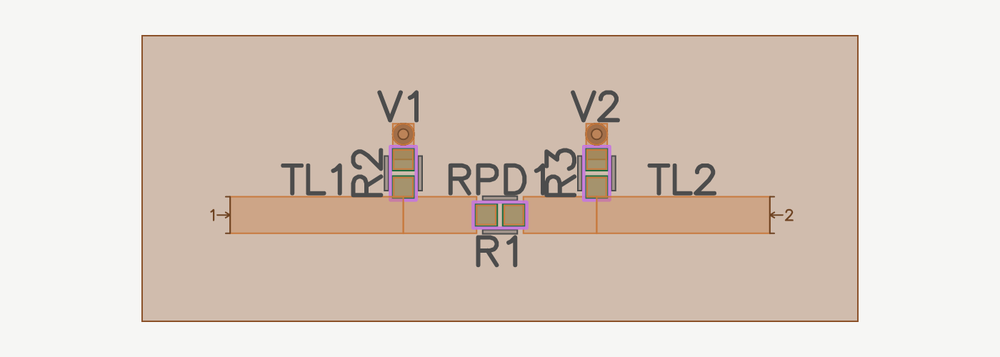
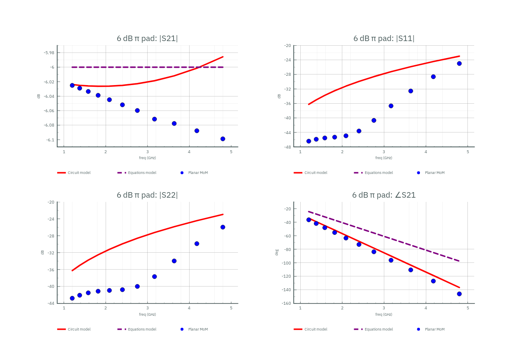
| At 2.4 GHz | Equations | Circuit | Planar MoM |
|---|---|---|---|
| |S21| | −6.00 dB | −6.03 dB | −6.05 dB |
| |S11| | below −100 dB | −30.0 dB | −43.6 dB |
| ∠S21 | −48.8° | −68.1° | −72.9° |
The loss is the ideal resistors' to 0.05 dB; the pads' interconnect adds 19° of line in the model and 24° in Planar.
Open points
- Branch-line: the 3D |S21| reads 0.33 to 0.40 dB low; a series reactance per lumped port does not explain it.
- Unequal split: the 3D results send 0.5 to 0.9 dB too much to port 2; the cause is not established.
- Balun: the outputs are about 170° apart, not 180°: microstrip's even and odd modes travel at different speeds.
- Coupler: the 3D results read about 1 dB more coupling than the model and Planar.
- Narrow gaps need Planar's edge mesh and finer 3D meshes, which the coupler's and the balun's setups have.
- Tandem: a 1206's land is longer than the 2.44 mm break, so Update Layout centres each jumper on its break and reports its two joints as not closing, though the pads lap the runs either side and LVS is clean.
- Lumped Wilkinson: the values do not absorb the interconnect yet, so at 2.4 GHz the board detunes the divider.
- The interdigitated coupler (MIDC) has no cell yet. Its jumpers cross a finger, which Planar cannot model and the 3D view needs drawn by hand, and its 163 µm fingers need tapered feeds before a calibrated port can sit on them.
Things to try
- Change
ForZ0on a part: it is re-planned, and Update Layout redraws the board for a new EM run. - Change a closing resistor on a bench, such as
R1_plon Wilkinson Bench, and watch |S23| move with no EM run. - Change
Kon Unequal and setR1to Z0·(K + 1/K); aKthe board cannot draw is refused (4 asks for 412 Ω). - Set
Nto 3 on Broadband: the part growsR2_3/R3_3, and the readout gives the three resistors.